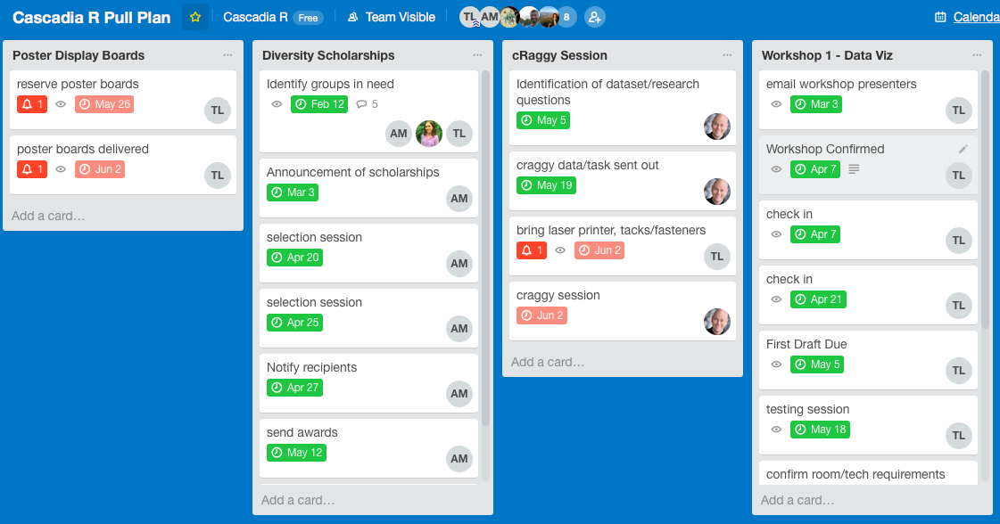

![]()

Well, Cascadia-R 2018 has come and gone. This year we tried our best to make it as inclusive, welcoming, and friendly as we could. Considering we had 224 participants this time around, I’d say it was a success.
I just thought I would do a little write up of some of the things we did and why we did them in our conference. I’m hoping it will be useful for other conference planners to create a welcoming environment.
We created a pull plan based on what we learned last year. Because last year was pretty chaotic in terms of planning, we decided to try to make a pull plan this year. Pull planning is a project management technique in which you work backwards from absolute deadlines (from the day of the conference). Doing so spaces out a lot of the work and makes things potentially more dividable across a group. I’ve made our pull plan public so other conference planners can see what we did and the timing it took to organize the conference.
Find sponsorship money. We ran last year on a shoestring, using only about $3500. We realized that to make the conference more inclusive this year, we had to get sponsorship money. Childcare and diversity scholarships cost money. We wanted sponsors who had values that aligned with our inclusion goals. Lilly Winfree was especially great at finding sponsors who were in tune with what we wanted to accomplish with our conference. Sponsorship also allowed us to pay for lunch for everyone, which we couldn’t last year.
Provide childcare. We wanted parents to be able to attend, so we got DivCare to provide childcare for them in our building. DivCare provided childcare for 8 children, and we had some grateful parents who were happy they could attend.
Diversity Committee. We did this last year, but we had more money this year for diversity scholarships for those who might not be able to attend. I think next year we might think about reaching out to more STEM groups, but I think the real challenge is finding how to get those diverse students who might not even know about data science in and how to properly host and support them.
Get rid of longer form talks. Keynotes and Lightning talks only. This is probably the most controversial choice that we made. However, we realized that the 10-15 minute talks we had in 2017 were mostly academic ones. Honestly, there are already too many academic conferences out there. We wanted a format that was more accessible and encouraged discussion afterwards, so we stayed with the lightning talks.
Have keynote speakers show newcomers how to join the R Community. We chose Kara Woo and Alison Hill as our keynote speakers for a very specific reason: we wanted to encourage people new to R that they could learn things. Alison gave a wonderful talk about ways to approach learning R; Kara gave a great talk talking about how to contribute to various R-projects on GitHub, especially the
tidyversesuite of packages. What I really liked about both their talks was that they emphasized learning by doing.Moar workshops. We wanted beginners and intermediate people feel like they were learning something, and in a safe learning environment. One piece of feedback from last year was that people wanted more workshops. We created a beginner track and an intermediate track for workshops. I would just like to say that none of the workshop people got paid for their work, and I do wish that some of the attendees realized that before they provided feedback such as “BORING” (seriously? please realize that there are people who develop these, and constructive feedback is always better). All of these workshops were done for free as labors of love, unlike conferences like ODSC.
Organize Volunteers. We had lots of volunteers this year and we finally were able to figure out roles for everyone to do (registration, nametags, TAs, etc).
Do a visualization fest that wasn’t competitive. I know that everyone loves bake-offs like the DREAM Challenges and Kaggle, but we felt that having a competition was in conflict with the community building we wanted to do with the conference.That, and Tidy Tuesday, were the inspirations for the cRaggy. We wanted people to share ideas with each other and to be constructive with each other. We had three great short talks talking about their approach to the visualization and we shared the data with Tidy Tuesday.
Talk honestly about impostor syndrome. We had a panel with three people (the wonderful Paige Bailey, Kevin Watanabe-Smith and Lilly Winfree) and they all talked about how they deal with impostor syndrome. Some of the lessons are: you feel like less of an impostor the more you do and the more you participate.
Have more downtime. We had feedback last year that there wasn’t enough social time. We built more breaks into the schedule and had a third room (the hack room) dedicated to the “hallway track”: often the best times we’ve had conferences is when we play hooky from conference activities. Some people suggested this year that there maybe was too much downtime. I would say to that, there’s always more opportunity to meet people.
So that’s why Cascadia R was the way it was this year. In another blog post, I’ll talk more about the fun things that happened this year and our hopes for the next year.
Citation
BibTeX citation:
@online{laderas2018,
author = {Ted Laderas},
title = {Cascadia-R 2018: {How} We Planned It and the Reasons Why},
date = {2018-06-09},
langid = {en}
}
For attribution, please cite this work as:
Ted Laderas. 2018. “Cascadia-R 2018: How We Planned It and the
Reasons Why.” June 9, 2018.